四臂整机: 死点锁紧夹爪 + 不随转的舵机
v2 解决了 "机械臂挂在马达输出轴上" 的问题, 但它仍然是一只单臂, 转动部分又长又重, 舵机跟着转。CubeStormer 3 这一级别的机器, 专业性体现在整机: 四只机械手又短又轻、夹得住也松得开、能连续旋转, 四只之间互不干涉。v3 按这个目标从整机重新设计, 自成一套模型和检查。之前的版本都保留不动: v1 大马达版、v2 转盘版。
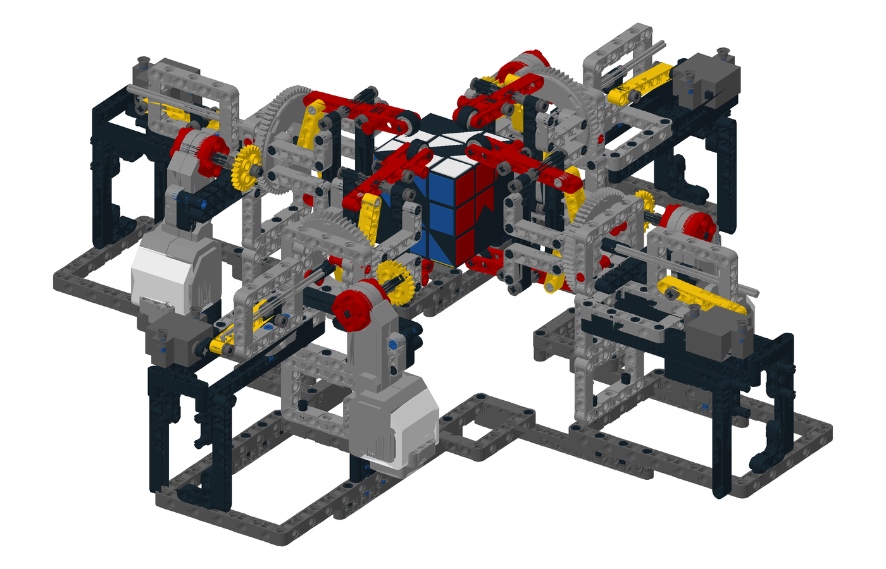
3D 模型 (可旋转)
拖动旋转, 滚轮或双指缩放, 右键或双指拖动平移。滑块选到第几步, 就显示到那一步为止的零件, 这一步新加的零件会提亮。
v2 评估: 离 CubeStormer 3 的专业水准还差在整机
CubeStormer 3 没有公开图纸和源码, 下表 "CS3 级别的做法" 一列是从公开视频能看到的整体特征归纳出来的, 不是对它内部结构的复刻。v3 的每个具体结构都是在这里重新推导、并用程序检查过的。
| 方面 | v2 | CS3 级别的做法 | v3 |
|---|---|---|---|
| 整机形态 | 只有单臂; 四臂怎么排、底座怎么连都没有设计, 也没有四臂之间的干涉检查 | 四个一样的模块两两垂直, 固定在一个整体底座上 | 四个相同模块 + 横梁两层交叉搭成的网格底座, 孔位保证四根轴线过魔方中心、两两垂直; 四臂干涉按全部状态组合扫描过 |
| 转动部分 | 转盘上装着舵机、叉子盒、两根 16 号导轨, 从转盘端面到魔方约 144mm, 转动惯量大 | 夹爪短而轻, 马达和舵机都不跟着转 | 转动的只有转盘上半、两块侧板、夹指、连杆和推杆, 约 52mm 长, 没有舵机和马达 |
| 夹紧 | U 形叉沿轴向插入, 水平时没有压紧力, 曲柄停在死点不等于锁紧 (外部评审 ① ②) | 两片夹指从两侧合拢夹住魔方 | 两片会转的夹指 + 肘节连杆: 连杆推到死点时魔方的反推力沿连杆方向互相抵消, 夹指推不开, 舵机不受力 |
| 旋转范围 | 舵机随机械手转动, 线缆会缠, 规划器必须限角度 (±270° 时规划慢 20 多倍) | 机械手可以连续旋转 | 舵机固定在后面的平台上, 经穿过转盘中孔的推杆开合夹爪; 机械手可以无限旋转, 规划器不需要角度限制 |
| 驱动 | 马达输出轴直接带机械手 | — | 马达偏到侧面, 36 齿齿轮带 60 齿转盘外圈, 扭矩放大 1.67 倍, 马达的回差和编码器误差在机械手上缩小 1.67 倍; 输出轴不承受弯矩 |
设计思路
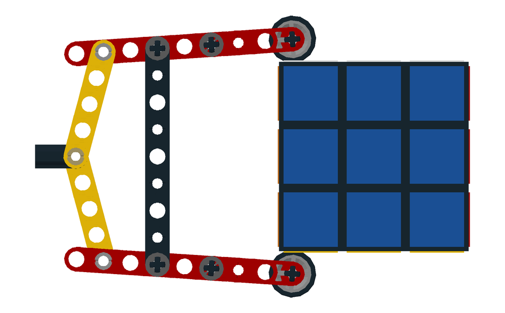
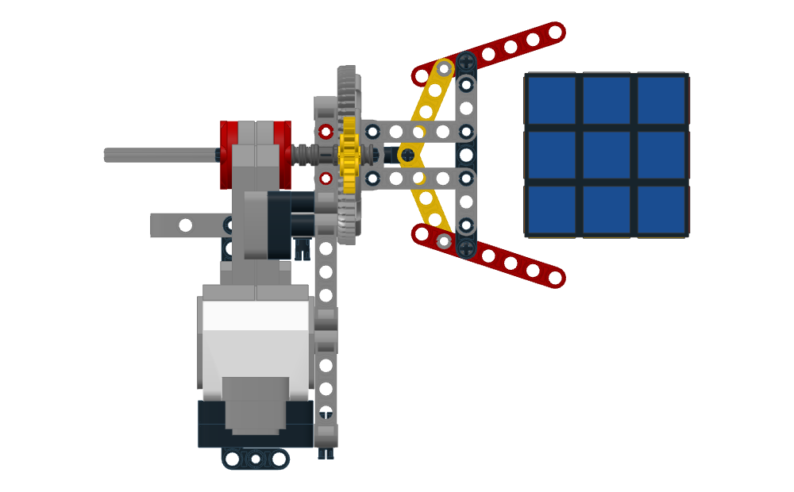
- 肘节锁紧的夹指。每只机械手两片 7 孔粗梁当夹指, 绕根部的 5 号轴转动。十字接头往前推, 两根连杆把夹指根部往外撑, 前端合拢。推到连杆和推杆垂直 (死点) 时, 魔方把夹指往外推的力沿连杆传到十字接头, 上下两根互相抵消, 推杆上没有分力, 所以舵机不受力, 夹指也推不开。水平姿态下同样夹得住, 不再依赖摩擦。
- 舵机不跟着转。舵机固定在机械手后面的平台上, 曲柄和连杆同样拉到死点, 通过十字块推拉一根 12 号轴。推杆穿过转盘中孔和导向框架两条边上的圆孔, 机械手转动时推杆跟着转, 十字块在推杆上一起转 (两侧半轴套锁住轴向位置)。转动部分没有任何线缆。
- 齿轮带转盘外圈。60 齿转盘仍然是主轴承 (v2 的结论保留), 但不再用马达输出轴直接带, 而是马达偏到侧面, 36 齿齿轮和转盘外圈啮合。这样转盘中孔留给推杆, 马达只传扭矩, 1.67 倍减速同时缩小马达回差。
- 模块化。一个模块 = 竖墙 + 转盘 + 马达 + 舵机平台 + 机械头, 四个完全一样。底座的孔位让四根轴线严格过魔方中心、两两垂直, 不用调。模块整体往魔方方向挪了半个孔距, 这是让相邻模块的孔位对得上的关键 (否则会差半个孔)。
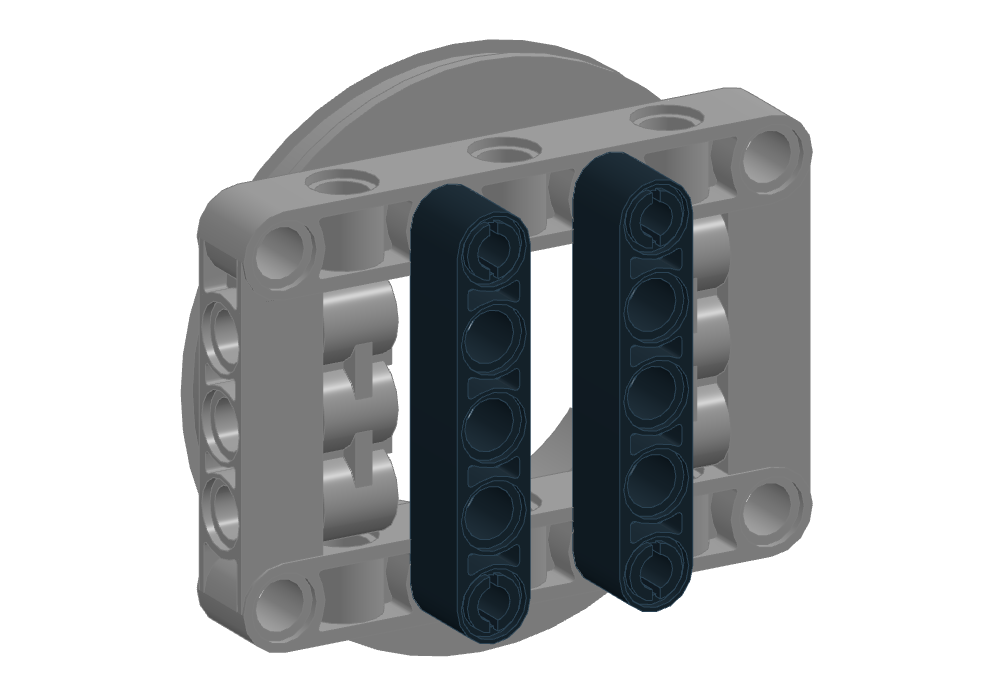
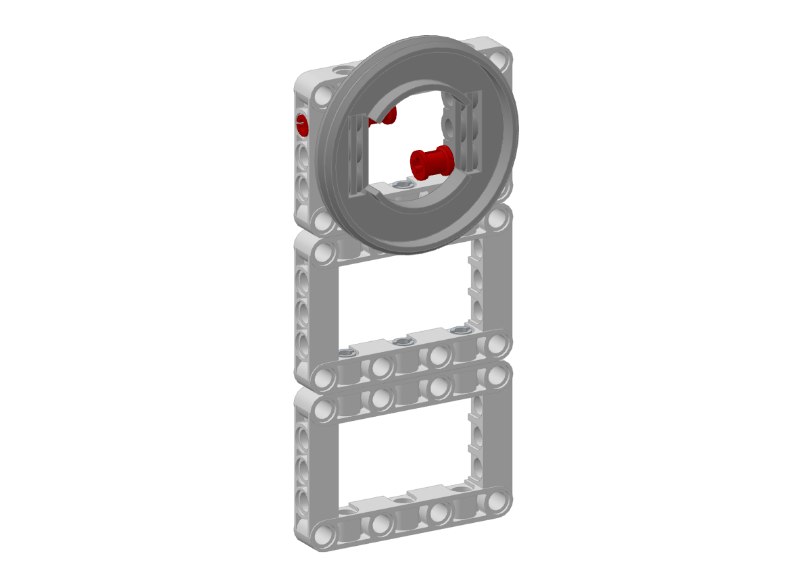
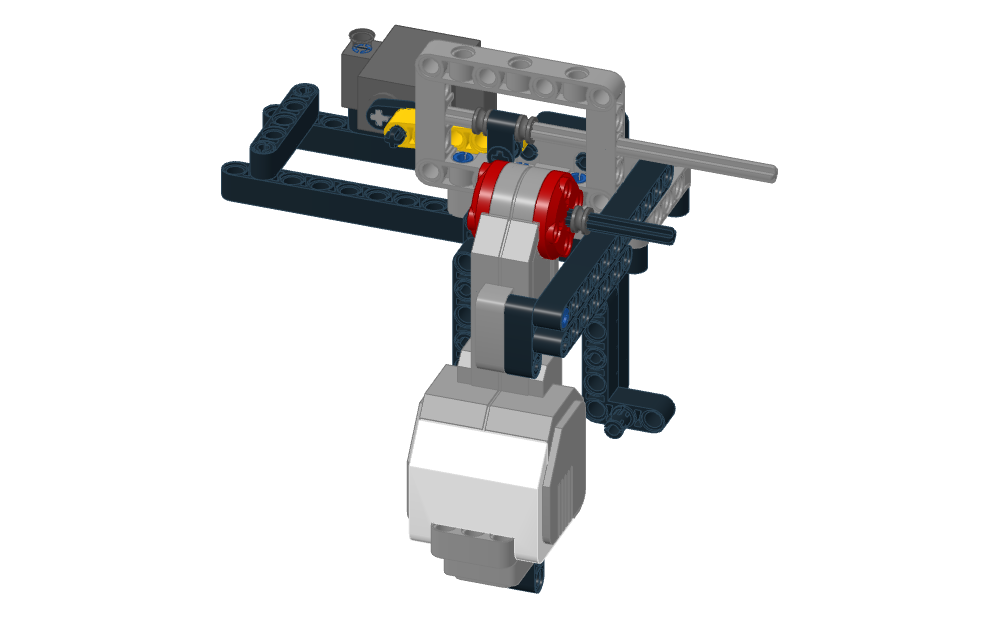
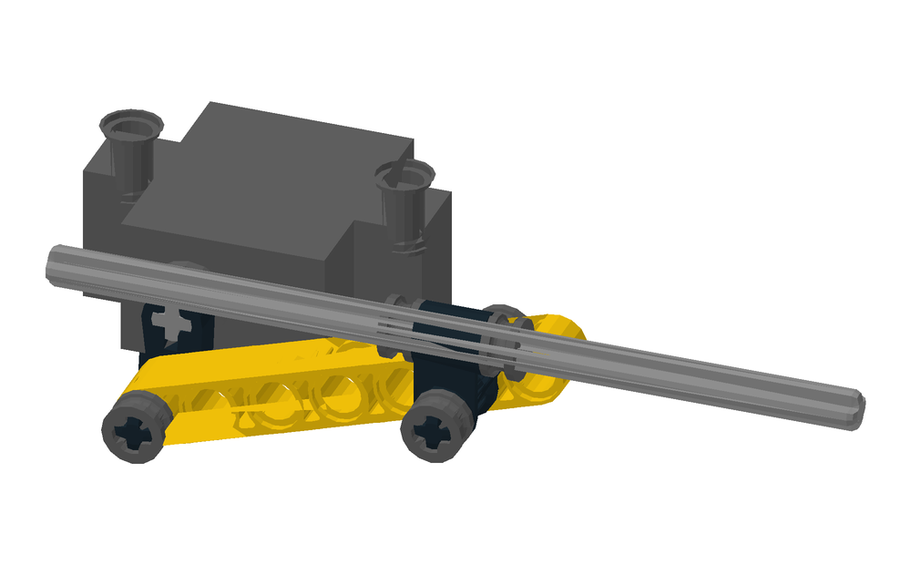
四臂检查 (tools/lego/v3/four_arm.py)
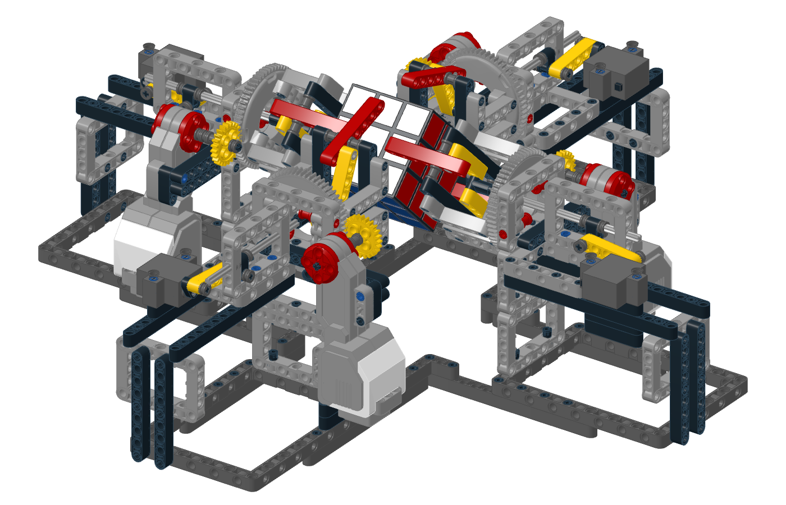
整体翻转到一半: L、R 夹着魔方转, F、B 松开保持竖直。
| 检查 | 结果 |
|---|---|
| 一只机械手夹紧或松开, 从竖直转到水平 (每 5° 一格), 两侧邻居在 夹紧/松开 × 竖直/水平 的 16 种组合下 | 邻居竖直时全部不碰; 邻居水平时, 转到 80° 左右会和邻居的夹指相撞 |
| 拧一层时, 邻居 (夹紧、竖直) 的零件离转轴的最近距离 | 110 LDU, 比魔方层的扫掠半径大 4.4mm |
| 整体翻转时, 邻居 (松开、竖直) 的零件离转轴的最近距离 | 105 LDU, 比魔方的扫掠半径大 2.4mm (按尖角算) |
python -m quadcuber plan ... --no-adjacent-horizontal): 转动中的机械手, 两侧邻居必须竖直且不同时转动。按现在的估算耗时, 20 步随机序列平均从 7.95 秒变成 9.69 秒 (约 +22%)。要买的零件
| 零件 | 编号 | 整机 | 45680 里有 | 还要买 | 说明 |
|---|---|---|---|---|---|
| 60 齿转盘 上半 + 下半 (套) | 18938 + 18939 | 4 | 2 | 2 | 每只机械手 1 套 |
| 36 齿双面锥齿轮 | 32498 | 4 | 2 | 2 | 和转盘外圈啮合 |
| 15x11 大框 | 39790 | 4 | 4 | 不用买 | 底座, 每个模块 1 块 |
| 7x5 框架 | 64179 | 20 | 8 | 12 | 每个模块 5 块 (竖墙 3、推杆导向 1、平台前半 1) |
| 3x5 L 形粗梁 | 32526 | 32 | 10 | 22 | 机械头侧板每侧 2 根, 平台支腿每侧 1 根, 底座每个角 1 根 |
| 15 孔粗梁 | 32278 | 16 | 6 | 10 | 平台下 2 根, 底座每个角 2 根 |
| 11 孔粗梁 | 32525 | 12 | 6 | 6 | 支腿竖梁、马达前端 |
| 9 孔粗梁 | 40490 | 12 | 8 | 4 | 马达前端、机械头 |
| 7 孔粗梁 | 32524 | 12 | 6 | 6 | 夹指、马达尾脚 |
| 5 孔粗梁 | 32316 | 20 | 8 | 12 | 舵机垫块、连杆、平台后端横撑 |
| 3 孔粗梁 | 32523 | 4 | 10 | 不用买 | 马达颈部 |
| 摩擦销 | 2780 | 248 | 80 | 168 | 多买一些备用 |
| 蓝色长摩擦销 | 6558 | 24 | 36 | 不用买 | |
| 带挡套长销 | 32054 | 16 | 12 | 4 | 转盘下半和马达耳朵 |
| 无摩擦销 / 无摩擦长销 | 3673 / 32556a | — | — | — | 夹爪的活动关节: 8 / 4 |
| 2 号 / 5 号 / 7 号 / 12 号轴 | 32062 / 32073 / 44294 / 3708 | — | — | — | 8 / 8 / 4 / 4 |
| 轴套 / 半轴套 | 3713 / 32123 | — | — | — | 20 / 16 |
| 十字轴接头 (带圆孔) / 十字块 1x2 / 2 孔细梁 | 32039 / 6536 / 41677 | — | — | — | 各 4 |
| EV3 大马达 / Geekservo 灰色 | — | — | — | — | 4 / 4; 现在只有 2 个大马达, 还缺 2 个 |
"45680 里有" 按 Brickset 的 45680 (SPIKE Prime 扩展套装) 零件清单, 不分颜色; 最后几行 45680 里没有或数量对不上型号的, 按 "说明" 里的数量买。你手上其他零件没算进去。
可以先只搭一个模块 (底座只要它那一块大框) 做单臂实测, 验证夹持和转速后再买齐四套。
零件清单 (整机)
颜色不限, 图中颜色只是为了区分 (深灰是底座, 红色是夹指, 黄色是连杆)。另需 56mm 魔方 1 个。
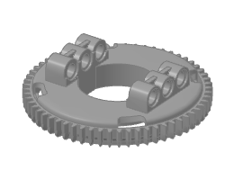
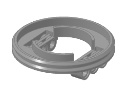
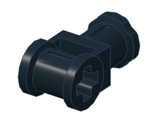


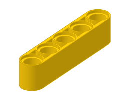
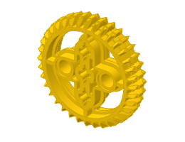


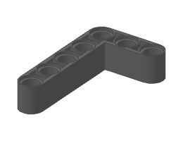
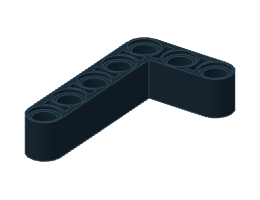
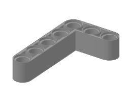
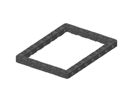
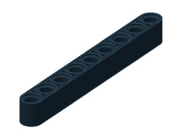

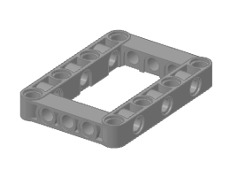

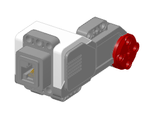


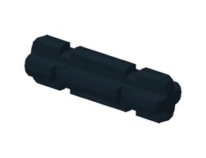
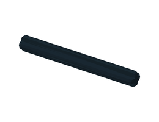

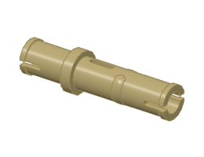

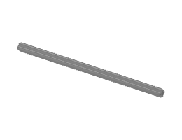
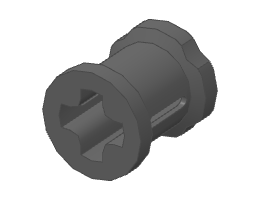


搭建步骤
底座
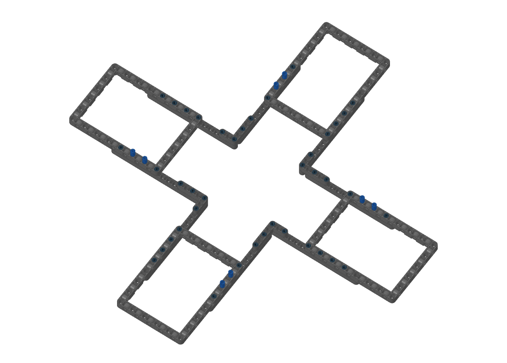
4 块 15x11 大框 (45680 套装里的) 摆成十字形, 每块的长边朝外, 靠里的短边就是竖墙的位置, 相对两块的短边相距 24 个孔; 大框偏在长边中线的一侧半个孔 (看图)。大框下面垫 15 孔梁, 梁贴着桌面: 每块大框的两条长边下面各一根: 长边上的竖孔是隔一个一个的, 最靠里的 4 个竖孔各插 1 个摩擦销, 梁的一头伸出大框、到角上 (伸出多少看图)。相邻两块大框的梁在角上一横一竖挨着, 最后在角上 (和大框同一层) 放一根 3x5 L 形梁, 拐角对准横梁末端的孔, 4 个摩擦销 (每根梁 2 个)。四个角做法一样。
竖墙

三块 7x5 框架竖着上下对齐, 相邻长边各用 3 个摩擦销穿侧孔连起来, 拼成一面 7x15 的墙。
转盘下半
60 齿转盘的下半 (没有齿): 底部的长方形凸台从正面 (朝魔方的一面) 塞进最上面那块框架的开口, 长边沿框架的长边, 圆盘的边沿贴住框架正面。然后从转盘中孔里面插 2 根红色带挡套长销: 把销平放进凸台里面 (凸台两端壁之间正好放下一根, 很紧), 再往外推, 销穿过凸台端壁插进框架短边, 挡套留在凸台里面。一根用上排孔, 另一根用另一头的下排孔 (同一排两根的挡套会互相挡住)。
马达尾脚
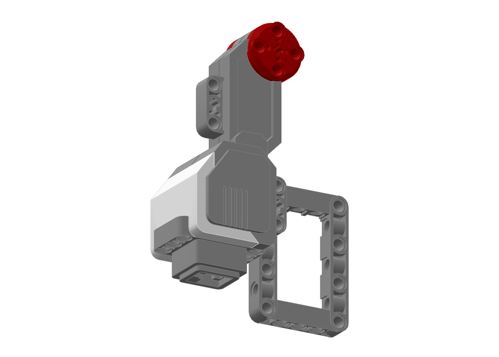
一根 7 孔粗梁竖着插进马达尾部两片耳朵之间的缝里, 第 2、4 个孔对准耳朵的两个圆孔, 两根红色带挡套长销从同一侧穿过耳朵和梁 (TRACK3R 的耳朵固定方式)。梁的下端伸出马达底面, 马达装好后踩在底座大框的长边上。
马达前梁
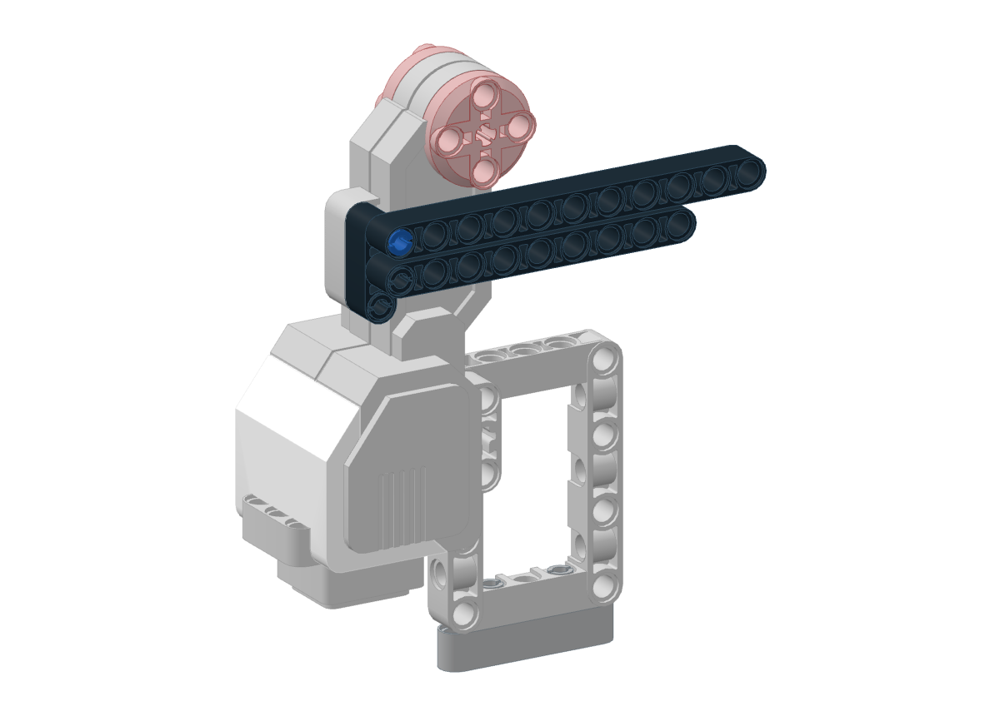
马达靠输出盘那一侧, 输出盘下面有一段缩进去 2 个孔深的 "颈部", 上面一竖列 3 个横穿马达的孔 (两个圆孔夹一个十字孔)。先在上圆孔插 1 根蓝色长摩擦销 (1 孔长的那段插进马达, 挡肩贴住颈部), 下圆孔插 1 个摩擦销; 把一根 3 孔粗梁竖着压到这两个销上。再在 3 孔梁中间的孔插 1 个摩擦销。然后把两根横梁压上去, 都朝竖墙的方向伸出: 11 孔粗梁的第 1 个孔扣在蓝色长销上, 9 孔粗梁的第 1 个孔扣在中间的摩擦销上。
齿轮
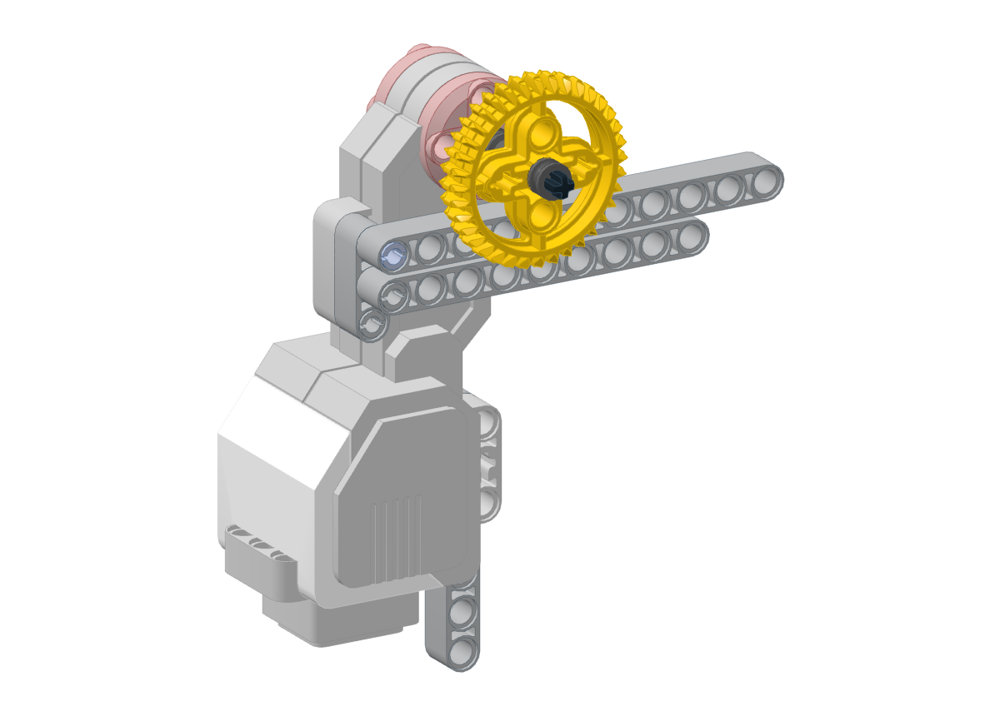
7 号轴从这一面插进马达输出盘中间的十字孔, 一直推到底: 输出盘的十字孔是贯通的 (马达两面都有输出盘), 轴的另一头和马达另一面的输出盘基本平齐 (只露出不到 1 mm)。这样马达里占 3 个孔长, 外面露出约 4 个孔长。然后依次套上半轴套、轴套、36 齿齿轮, 最前面再套一个半轴套, 半轴套外面还剩约半个孔长的轴。
装竖墙
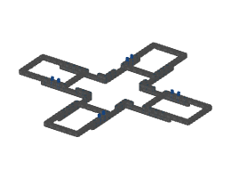
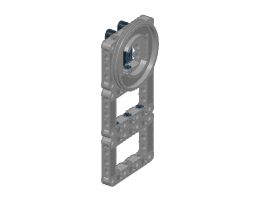
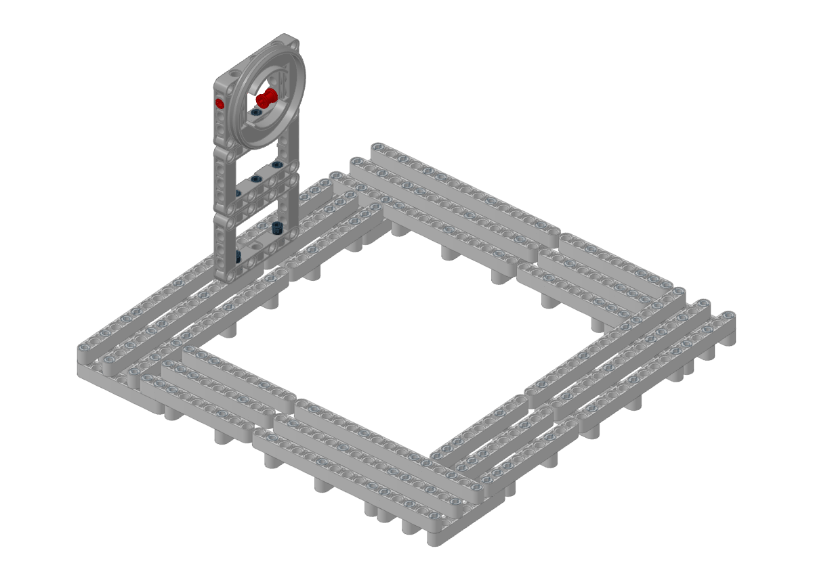
做好的竖墙立在底座大框靠魔方的那条短边正中, 墙面朝魔方。2 个摩擦销竖着从墙底边的侧孔插进底座框架。
装马达
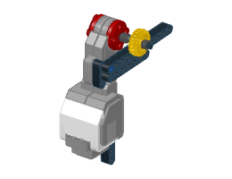
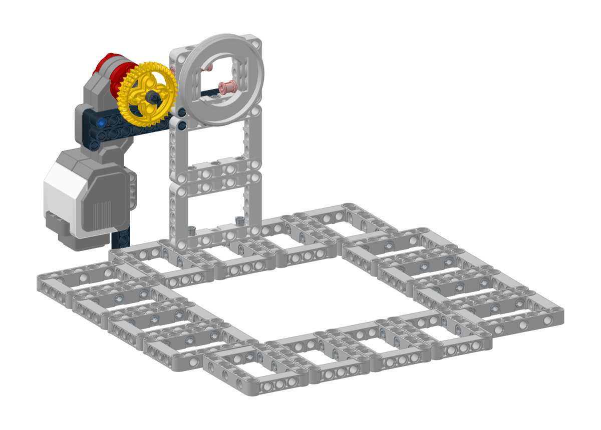
在两根横梁上对准竖墙框架正面孔的位置插摩擦销: 11 孔梁 3 个 (接最上面那块框架), 9 孔梁 2 个 (接中间那块框架)。把整个马达组件平推到竖墙背面, 5 个销同时插进墙上的孔; 马达尾部的竖梁踩在底座大框的长边上。装机械头时 36 齿齿轮和转盘上半的齿啮合 (两轴相距 3 个孔 = 两个节圆半径之和)。
舵机平台
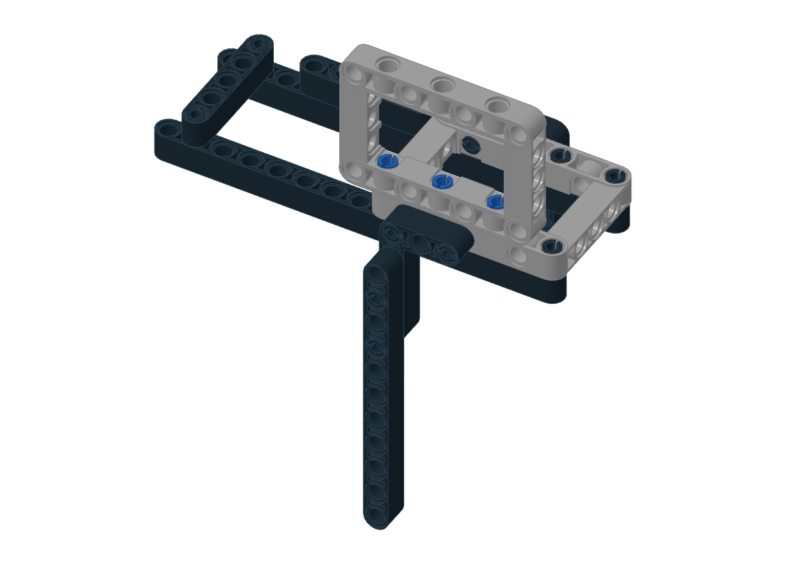
两根 15 孔粗梁平放、平行, 相距 4 个孔。一块 7x5 框架平放压在两根梁的前段上 (框架前端和梁前端对齐), 5 个摩擦销竖着连起来 (框架正面孔: 一根梁 4 个, 另一根梁只插最前面 1 个, 其余 3 个孔留给导向框架的长销)。两根梁的最后一个孔上横压一根 5 孔粗梁, 2 个摩擦销, 让后段也连成封闭的长方形。梁的后段上面, 舵机那一侧压一根 5 孔粗梁当舵机垫块, 3 个摩擦销。支腿: 框架两条长边外侧各贴一根 3x5 L 形梁, 短臂沿推杆方向, 2 个摩擦销插进框架长边的侧孔, 长臂朝下; 一侧的长臂外面再用 2 个摩擦销接一根竖着的 11 孔粗梁, 下端踩在桌面上; 另一侧的竖梁在装平台时再装。平台前段上面竖立一块框架当推杆导向: 它长边沿推杆方向, 底边用 3 根蓝色长摩擦销竖着插进平台: 1 孔长的一段朝上插进导向框架, 2 孔长的一段穿过平台框架, 一直插进下面那根 15 孔梁; 两条短边上正中的侧孔 (圆孔) 就是推杆的两个轴承。
舵机
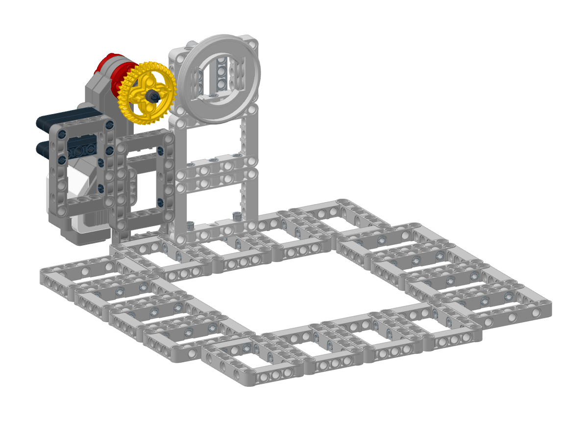
舵机平放在平台后端的垫块上, 输出轴朝推杆那一侧。2 根蓝色长摩擦销从上面插进舵机两只耳朵, 1 孔长的那段朝下插进垫块两头的孔。
装平台
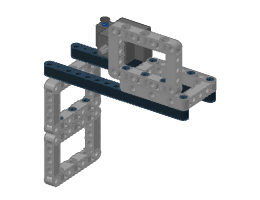
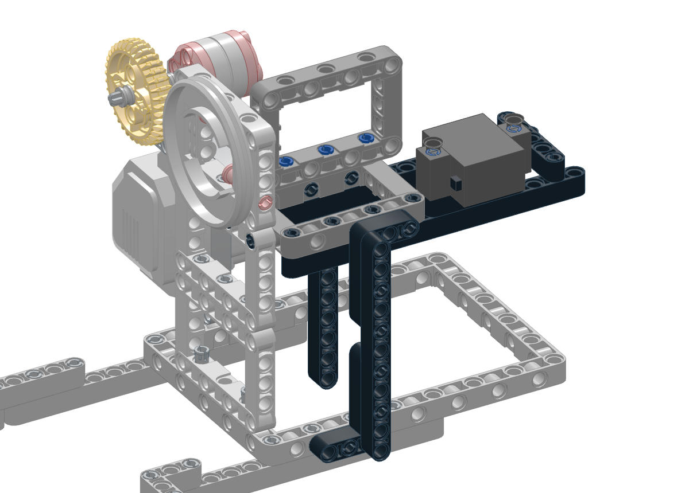
平台前端顶住竖墙背面, 2 个摩擦销沿推杆方向穿进墙的孔。检查导向框架的两个轴承孔、转盘中孔在一条直线上。然后装另一根支腿并接到底座: 在大框长边外侧的侧孔 (看图) 插 1 个摩擦销, 套上一根 3x5 L 形梁 (拐角朝下, 短臂朝魔方方向, 短臂第 2 个孔套在这个销上); 在它长臂上面 2 个孔、平台那根 L 形梁长臂下面 2 个孔各插摩擦销, 最后把一根 11 孔粗梁竖着从外面压到 4 个销上 (上面 2 个在平台的 L 形梁上, 下面 2 个在这根 L 形梁上)。
十字块和舵机连杆
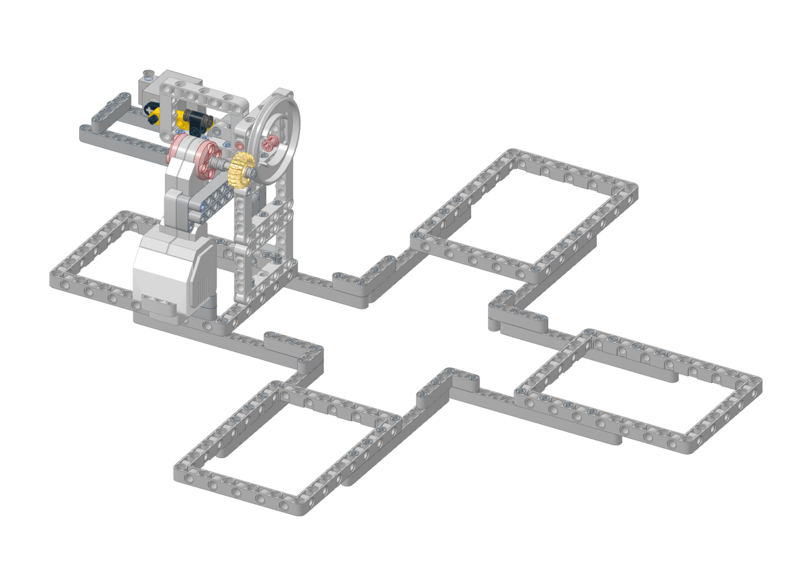
十字块 (圆孔在上) 两边各贴一个半轴套, 放进导向框架的开口里, 圆孔对准两个轴承孔 (推杆最后从前面穿进来)。2 号轴插进十字块下面的十字孔, 黄色 5 孔连杆的一端套在 2 号轴上。先让舵机转到 "夹紧" 角度, 再把曲柄 (2 孔细梁) 的十字孔套到舵机输出轴上, 让曲柄指向十字块、和连杆拉成一条直线 (死点); 最后用一根 2 号轴穿过连杆另一端的圆孔, 插进曲柄另一头的十字孔。
侧板与夹指架
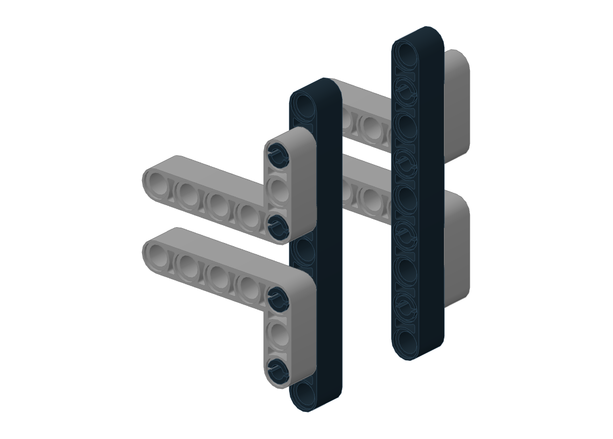
两根 3x5 L 形梁竖放, 长臂沿推杆方向, 两根长臂一上一下平行 (相距 2 个孔), 短臂都在靠魔方的一头, 一根朝上、一根朝下; 内侧贴一根 9 孔粗梁 (竖直), 4 个摩擦销穿过两根 L 形梁的短臂和长臂末端连起来。9 孔梁上下两端的孔就是夹指的转轴孔。这样做两套, 左右对称。
转盘上半
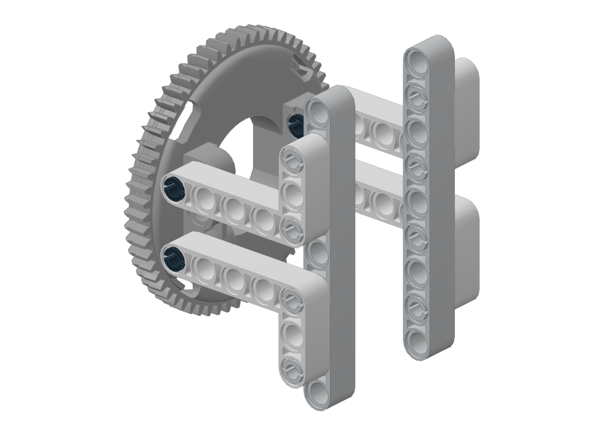
60 齿转盘的上半 (有齿): 先在底部凸台两头各插 2 个摩擦销 (上下两个孔, 挡环贴住凸台端面), 有齿的一面朝后。再把两套侧板从左右两边压到销上, 两根 L 形梁长臂后端的孔对准销, 粗梁在内侧朝魔方。
夹指
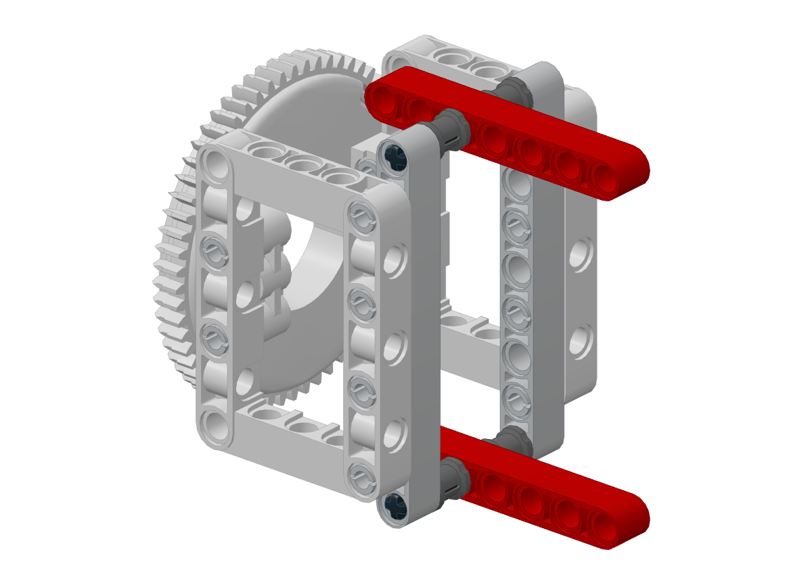
两根红色 7 孔粗梁当夹指, 一上一下。每根从前数第 5 个孔套在一根 5 号轴上, 5 号轴两端穿过两根 9 孔粗梁最外面的孔, 夹指两侧各套一个轴套定位。夹指应能绕 5 号轴自由摆动。
连杆与十字接头

十字接头的圆孔里穿一根米色无摩擦长销, 两根黄色 5 孔连杆一上一下套在长销两端; 连杆另一端各用一个灰色无摩擦销接到夹指从前数第 6 个孔。十字接头往前推时连杆把夹指根部往外撑, 夹指前端合拢; 推到两根连杆和推杆垂直时就是死点, 魔方把夹指往外推的力传不回推杆。
推杆

12 号轴插进十字接头后端的十字孔。
装机械头
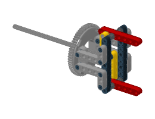
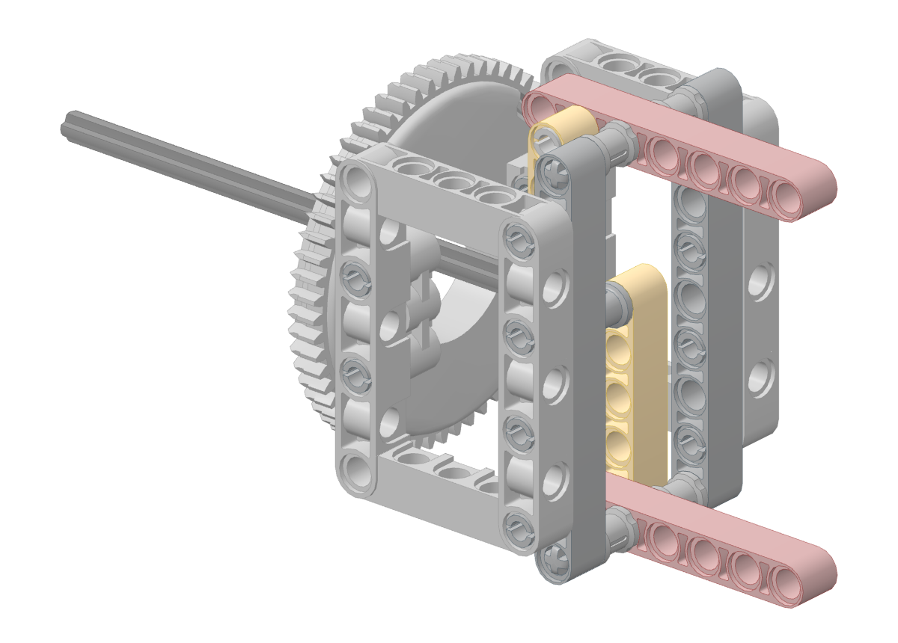
推杆从转盘下半的中孔往后穿, 依次穿过导向框架前面的轴承孔、半轴套、十字块、半轴套、后面的轴承孔。转盘上半对准下半扣上 (两半本身卡在一起, 不用销)。最后把两个半轴套推到贴住十字块, 让十字块和推杆一起前后移动。
装另外三个机械手

照上面的步骤再做三个一样的机械手, 装到底座的另外三排上。四根推杆的轴线都过魔方中心, 两两垂直 (底座的孔位保证了这一点, 不用调)。
放入魔方


四个舵机都转到 "松开", 四个机械手都转到竖直 (夹指一上一下)。魔方放在中间, 先夹紧 L、R, 再夹紧 F、B。
检查与待验证
| 程序检查 | 结果 |
|---|---|
| 单模块夹紧、松开, 以及夹指行程中间 7 个位置: 零件互相穿模 | 无 |
| 整机: 每个销、轴都插在孔里且至少连接两个零件; 长销挡肩位置 | 通过 |
| 按搭建顺序模拟插销: 带挡环的销两侧零件能沿销轴压上去 (不会出现 "两头都要插、只能插进一半") | 通过 |
| 四臂转动干涉 (上一节) | 只有 "相邻两只同时水平", 已写进规划器约束 |
| 待实物验证 (模型保证不了) | 怎么看 |
|---|---|
| 夹指预紧 | 死点位置按 56mm 魔方算, 实际魔方尺寸有误差。建议在两片夹指前端之间套一根橡皮筋, 或在夹指内侧贴一层薄橡胶, 让死点时有一点压紧量。夹紧后用手扭魔方外层, 看夹指是否打滑 |
| 舵机死点标定 | 装曲柄前先把舵机转到 "夹紧" 角度; 装好后微调角度, 让曲柄和连杆正好拉直 (过死点一点点更好, 需加限位) |
| 转盘下半卡在框架开口里 | 按零件尺寸凸台正好是 5x3 孔大小; 如果实物偏松, 在凸台和框架之间垫一层胶带, 或在凸台两头的孔里各插一根 2 号轴 (没有挡环, 可以从框架外面推进去) 加固 |
| 马达前板的销孔 | 模型假设马达靠近输出盘的侧面两个孔可以插摩擦销; 如果不是通孔或深度不够, 改用 TRACK3R 的耳朵固定加一根竖梁 |
| 齿轮啮合和回差 | 36 齿和 60 齿转盘外圈中心距 3 个孔 (官方组合); 手转机械手应顺滑, 马达锁住时晃动机械手看回差 |
| 舵机平台刚度 | 平台前端接墙、后端支腿立在桌上; 舵机开合时看平台是否弹动, 必要时后端支腿和底座之间加连接 |
| 推杆在转动时的摩擦 | 推杆随机械手一起转, 十字块在导向框架里跟着转; 手转机械手时应不卡, 半轴套别压太紧 |
| 整体翻转的间隙 | 按尖角算只有 2.4mm; 实际魔方有圆角, 余量更大, 但要用自己的魔方实测 |
| 魔方尺寸 | 按 56mm 魔方设计; 57mm 魔方放不进 |
模型文件 model.ldr 可以用 Stud.io、LeoCAD 或 LDView 打开 (需要把 tools/lego/parts/ 里的 geekservo.dat、cube56.dat 放进它们的零件目录)。设计推导见仓库 docs/lego/v3/README.md。
上电前
- 4 个舵机用单独的 5V 降压电源 (DSN5000 先调到 5.0V 再接), 不要从 Pico 取电; 四个同时动作的峰值电流按 3A 以上准备。
- 4 个大马达由 2 块 DRV8833 驱动, 马达电压不超过 10.8V (用 9V)。
- 编码器信号照旧经 10k/20k 分压后再接 Pico, 四臂一共 8 路。
- 第一次上电时先不放魔方, 单独开合每个夹爪, 确认曲柄停在死点、不顶死舵机 (舵机持续发热说明顶死了)。